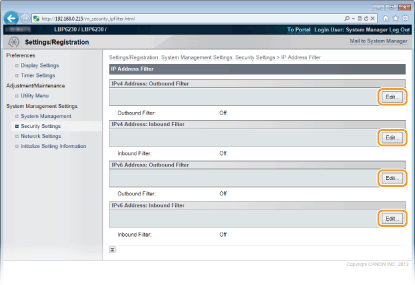

Specifying IP Addresses for Firewall Rules
You can allow only communication with devices that have the specified IP addresses and reject communication with other devices. You can also specify settings to reject only communication with devices that have specific IP addresses and allow other communications. You can specify a single IP address or a range of IP addresses.
|
|
|
Up to 16 IP addresses (or ranges of IP addresses) can be specified for both IPv4 and IPv6.
The communication protocols that can be restricted in this way are TCP, UDP, and ICMP.
|
1
Start the Remote UI and log on in System Manager Mode. Starting the Remote UI
2
Click [Settings/Registration].

3
Click [Security Settings]  [IP Address Filter].
[IP Address Filter].

4
Click [Edit] to specify a filter type.

[IPv4 Address: Outbound Filter]
Restrict data sent from the machine to a computer by specifying an IPv4 address.
Restrict data sent from the machine to a computer by specifying an IPv4 address.
[IPv4 Address: Inbound Filter]
Restrict data received by the machine from a computer by specifying an IPv4 address.
Restrict data received by the machine from a computer by specifying an IPv4 address.
[IPv6 Address: Outbound Filter]
Restrict data sent from the machine to a computer by specifying an IPv6 address.
Restrict data sent from the machine to a computer by specifying an IPv6 address.
[IPv6 Address: Inbound Filter]
Restrict data received by the machine from a computer by specifying an IPv6 address.
Restrict data received by the machine from a computer by specifying an IPv6 address.
5
Specify the settings for filtering.
As the policy conditions, select a default policy to allow or reject communication between the machine and other devices. Then specify IP addresses for exceptions.

|
1
|
Select the [Use Filter] check box, and then select a policy with [Default Policy].
[Use Filter]
Select the check box to restrict communication. Clear the check box to communicate without restrictions. [Default Policy]
As the policy conditions, select whether to allow or reject other devices to communicate with the machine.
|
||||
|
2
|
Specify address exceptions.
Enter an IP address (or a range of IP addresses) in the [Address to Register] text box and click [Add].
 Entry format for IP addresses
To enter a single address (IPv4)
Enter numbers delimited by "." (periods) (Example: "192.168.0.10"). To enter a single address (IPv6)
Enter hexadecimal numbers delimited by ":" (colons) (Example: "fe80::10"). To specify a range of addresses
Insert a hyphen ("-") between the addresses (Examples: "192.168.0.10-192.168.0.20" "fe80::10-fe80::20"). To specify a range of addresses with a prefix
Enter an address, followed by a slash ("/") and a number indicating the prefix length (Examples: "192.168.0.32/27" "fe80::1234/64"). When [Reject] is selected for an outbound filter
Outgoing multicast and broadcast packets cannot be filtered.
To delete an IP address that has been set
Select the IP address to delete, and then click [Delete].
 |
||||
|
3
|
Click [OK].
|
6
Restart the machine.
Turn OFF the machine, wait for at least 10 seconds, and turn it back ON.